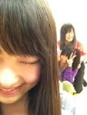

| 2012/04 09 Mon | ひめたん(* ゝω・*)ノ その126 |
昨日の記事ではたくさん誤報をしました訂正('・ω・`)
×
左下→
◎
右下から順番
×
ブレザー→
◎
カーディガン
本当ごめんなさいっ
なんで?
ひめたん寝てないよ?ん。

今日の乃木どこ?
大橋未歩アナウンサーが来てくれました。
あーん出たかったなあ('・・`)
おいシャンとね、ちょこっと左胸とね、盛りだくさんねー!
 自分4月6日誕生日なんよ。祝ってくれますか?フォーティシックス!
自分4月6日誕生日なんよ。祝ってくれますか?フォーティシックス!
きゃー過ぎちゃったごめんなさいっ
いいねえ4月6日☆乃木坂ふぁみりーに成るべくして生まれてこられたんですね
...ごめんなさい自惚れました←
おめでとうございます(*/ω＼*)
名古屋での全国握手会の日自分の誕生日だから『おめでとう』と言ってね♪
ああ握手会にもいけずおめでとうも言えなかった。ごめんなさいっ
ひめたんと一週間違いだね!そしてふぁみりーにも1日違いの方が。
なんかご縁を感じますね。
おめでとーう＼(^O^)／
 どこに買い物に行くことが多いですか?
どこに買い物に行くことが多いですか?
渋谷・原宿、
あとアメ横も好きですっ(^ω^)
アメ横の楽しさねーもうびっくりする☆!
アンダーメンバーと選抜メンバーが遊ぶことってあんまりないんですか?
そんなことないよ＼(^O^)／みんな仲良しだよ♪
ちなみにひめたんが初めて一緒に遊んだのは
かずみさん
(高山一実chan)!
お小遣いっていくらぐらいなの?使い道は?
不定期ってか必要な時に必要な分だけもらってる(∀)☆
豆柴犬は好き?
可愛いよねー豆柴ちゃんね∪・ω・∪
 乃木坂の紫色の垂れ幕、気付いてもらえましたか?
乃木坂の紫色の垂れ幕、気付いてもらえましたか?
垂れ幕作成に至る秘話、じっくり読ませていただきました。
私たちもサッカーのサポーターのみなさんの前で歌うにあたって
もちろん楽しみがおおかったけど、不安もありました。
でも乃木坂の垂れ幕見て(あっ私たち乃木坂のために来てくれたんだ。)って
なんだかホッとしました♪運動会でぱぱままの顔見つけたような気分(*^^*)
 "ちゅーしちゃうぞ"ってPV撮影の時にひめたんが考えたのカナ?
"ちゅーしちゃうぞ"ってPV撮影の時にひめたんが考えたのカナ?
台本の台詞をひめたん流にアレンジして
ひめたん流のニュアンスで提案したフレーズであります(//ω//)
中学校で、何かの部活がなくなったとかありますか?
ひめたんが入学式した時はすでに存在してなかったけど
昔は演劇部があったらしいです('`)
もし自分の部活がなくなるとしたら、どうしますか?
放送部は大好きだったから、どうにかして残してもらうと思う。
だって今まで頑張ってきたなら最後まで続けたいじゃん!
交渉してみてはどうでしょう('・ω・`)?ひめたん悲しいよ?
握手に向かって全力でネタを仕込むファンをどう思う?
熱いですねーそゆの好きよ//
みなさんが熱いとひめたんもテンション上がります∩^ω^∩
これからも全力で握手しましょーう!
これからはコメントするときタメでもいいですか?
どうぞどうぞ(w)☆
太鼓合宿でキツイ俺にエールして下さいww
頑張れー!
辛くなったらひめたんを思いだすんだよ(`・ω・')
ひめたんもみなさんに負けんようにいろいろ頑張るー!!!
最近はダブルピースが多いけどマイブーム?
v(・ω・)vにゃ
今一番したいことは何ですか?(^o^)
AKBさんの「君のことが好きだから」のダンスを覚えたい!!
プレゼントされていくらあっても困らないものってなに?
愛

ちゅーっ(*/ω＼*)
はい真面目に答えた方がいいのかしら。いや真面目だが。
りぼんとか!
でもりぼん買うの、おとこのこは恥ずかしいかな。
質問ってどこから選んでるの?前回の記事?それとも過去の記事?
前回の記事の緊急+過去の記事から順番に(^^)
 乃木坂46受けるとき、親に反対された??
乃木坂46受けるとき、親に反対された??
反対するどころか応援してくれました(^^)＊
ただ、「お勉強も活動も頑張れるなら受けてみたら?」って言われたかな。
挨拶の時とかのキャッチコピー作らないのかな??
んんん最初の頃はちょっと考えたりもしたんだけどね('・ω・`)
なにかいいフレーズありますかー??
(*´・ω・*)ひめたん
コメント(83)
2012/04/09 00:54